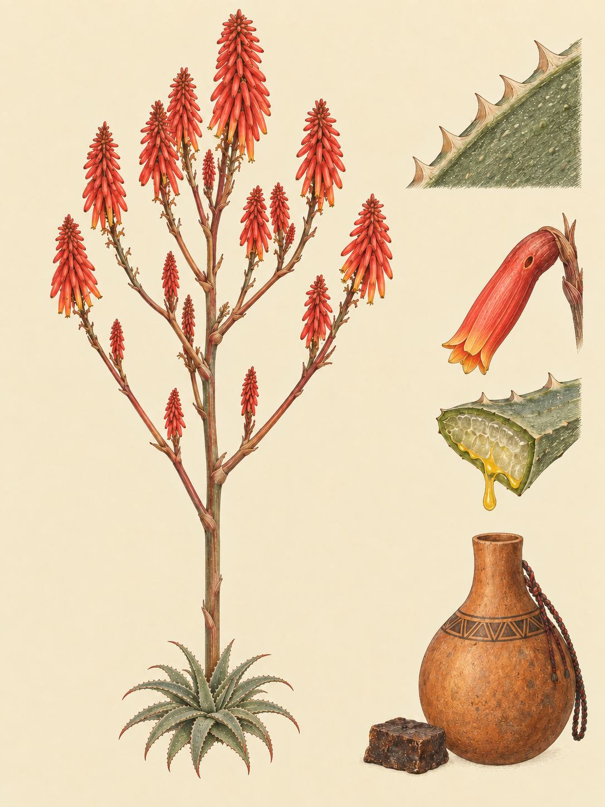

LAIKIPIA / MT. KENYA
Aloe secundiflora Engl.
Swahili: „Mshubiri“; Maa: „Osukuroi“; Samburu: „Sukuroi“; Kamba: „Kiluma“; Kikuyu: „Mugwanugu“; Giriama / Mijikenda: „Mugucwa“; Meru: „Kithunju“; Kichagga: „Isale la njofu“; Taita: „Kipapa“; Turkana: „Ejichuka“

Auf einer kahlen Stelle bei Mpala leuchtet eine rote Blütentraube über graugrünem Laub. Rings um die Rosette steht Gras, während der Boden außerhalb nackt bleibt. Die Pflanze sieht aus, als hätte sie sich einen kleinen Garten geschaffen. Tatsächlich verändert sie dort Wasser, Schatten und Wind. Aus einem einzelnen Strauch kann so eine Vegetationsinsel entstehen. Die Art ist im tropischen Ostafrika endemisch und kommt gesichert in Kenia, Tansania, Ruanda, Äthiopien und im Sudan vor. In Kenia gilt sie als die am weitesten verbreitete Art ihrer Gattung. Sie wächst in offenem Grasland, Savannen, lockerem Waldland und an steinigen Hängen, vor allem auf sandigen Böden zwischen 600 und 2.000 Metern Höhe.
Die Pflanze ist eine immergrüne, mehrjährige Sukkulente, die als Kraut oder Strauch klassifiziert wird. Ihre solitäre Rosette oder kleine Gruppe von bis zu drei Rosetten wird 80 bis 100 Zentimeter hoch und 8 bis 15 Zentimeter breit. Die fleischigen Blätter sind 0,5 bis 2,0 Zentimeter breit, an den Rändern sitzen feste Zähne von 0,5 bis 1,0 Millimetern Länge. Im Blatt liegt klares Gel. Weiter außen tritt aus den Gefäßbündeln ein gelbliches, bitteres Exsudat aus. Die Varietät sobolifera weicht im Wuchs durch Ausläufer von den solitären Rosetten ab.
Heinrich Gustav Adolf Engler beschrieb die Art 1895 in seinem Werk „Die Pflanzenwelt Ost-Afrikas und der Nachbargebiete“. Im Teil C klassifizierte er sie als Aloe secundiflora. Das Epitheton secundiflora bedeutet „einseitswendig blühend“ und verweist auf die Anordnung der Einzelblüten am Blütenstand. Die Art gehört zur Gattung Aloe. Ihre große Formenvielfalt führte zu mehreren Synonymen, darunter Aloe engleri, Aloe floramaculata und Aloe marsabitensis. Die Varietät Aloe secundiflora var. sobolifera bildet Ausläufer und wird in der systematischen Literatur getrennt geführt.
Am Übergang von der langen Trockenzeit zur kleinen Regenzeit steckt die Pflanze ihre Kraft in den Blütenstand. Das Reisezeitfenster reicht vom 24. September bis 12. Oktober. Der Blütenstamm wird 25 bis 40 Zentimeter hoch, manchmal sogar bis 50 Zentimeter. Mit Verzweigungen kann der gesamte Blütenstand bis zu 100 Zentimeter erreichen. Bis zu 20 abstehende Zweige tragen dichte, röhrenförmige Blütentrauben von 8 bis 26 Zentimetern Länge. Die Blüten leuchten rot bis orange. Die Hauptblütezeit in Kenia reicht von September bis Dezember. Die röhrenförmige Blütenform und die Nektarproduktion sind eng an die Bestäubung durch Nektarvögel gekoppelt. In diesem Fenster wird die Rosette zur Nahrungsquelle für die lokale Avifauna.
Die auffällige Blüte beginnt ihre Geschichte auf überweideten Flächen. Wo klimatischer Stress und Überweidung die Vegetation ausdünnen, liegen Kahlstellen offen. Niederschlag fließt dort als Oberflächenwasser ab, und der Boden erodiert. Die Aloe ist trockenheitsresistent und sukkulent genug, um solche Flächen zu besiedeln. Ihr Körper bremst den Wasserabfluss, spendet Schatten und vermindert die Winderosion. Innerhalb eines dokumentierten Radius von zwei Metern entsteht dadurch ein geschütztes Mikroklima. Dort keimen Samen einheimischer, mehrjähriger Gräser und wachsen erfolgreicher als auf den umliegenden Kahlstellen. Aus einzelnen Pflanzen entstehen Vegetationsinseln. Elizabeth G. King erforschte diesen „Nurse Plant“-Effekt zwischen 2004 und 2008 am Mpala Research Centre.
Eine zweite Kausalkette beginnt nicht im Boden, sondern im Trinkwasser eines Huhns. Maasai-Frauen verabreichen Freilandhühnern einen Blattsud gegen die Newcastle-Krankheit. R. K. Waihenya und sein Team bestätigten diese beobachtete Praxis 2002 virologisch und klinisch. Die Vögel nehmen den Rohextrakt oder Kaltauszug über das Trinkwasser auf. Danach sinkt die Viruslast, die Krankheit verläuft weniger schwer, und die Mortalitätsrate in den Beständen geht zurück. In den dokumentierten Anwendungen wird der Blattsud auch gegen Kokzidiose, Geflügeltyphus und Salmonella gallinarum eingesetzt.
Welcher Stoff den bitteren Auszug wirksam macht, ist nicht abschließend geklärt. Verschiedene Studien nannten die Anthrachinone Aloin A und Aloin B als Hauptwirkstoffe. Eine Analyse aus dem Jahr 2003 wies diese bekannten Aloin-Derivate in der Pflanze jedoch nicht nach, sondern identifizierte Aloenin und Aloenin B als Hauptkomponenten. Der genaue Aufbau des wirksamen Exsudats bleibt damit umstritten.
Nektarvögel der Familie Nectariniidae, darunter der Halsband-Nektarvogel Hedydipna collaris, besuchen die röhrenförmigen Blüten. Weil diese Vögel nicht artspezifisch vorgehen, kommt es häufig zu Hybridisierungen mit anderen gleichzeitig blühenden Aloe-Arten. Wenn die Kronröhre für ihren Schnabel zu lang ist, stechen Vögel oder Insekten die Blüte an ihrer Basis auf. Sie erreichen den Nektar, umgehen dabei aber die Bestäubung. Ein Teil der beraubten Blüten bildet später trotzdem Früchte. Die Tagesrhythmik der Pflanze selbst, etwa genaue Zeiten der Nektarsekretion, ist dagegen nicht belegt.
Auch Menschen geben der Pflanze Aufgaben. In Kenia werden Blätter oder verdünnter Blattsaft in verschiedenen Gemeinschaften gegen Malaria und Beschwerden wie Typhus, Durchfall oder Magenschmerzen verwendet. Als dichte, dornige Hecke grenzt die Aloe Gehöfte ab und schützt Nutzpflanzen vor Wildverbiss. Eine kenianische Fabrik verarbeitet ihren Extrakt zu Badeseife. Auf der Kahlstelle bleibt sie dabei zugleich der stille Körper, der Wasser festhält.
Wenn die rote Traube über der Kahlstelle leuchtet, erzählt sie deshalb von beidem: von einem Vogel, der Nahrung sucht, und von einer Pflanze, die auf nacktem Boden Schatten sammelt. Rings um die Rosette beginnt das Gras, wo außerhalb nur Erde liegt.
In Kenia reicht die Nutzung der Sekundiflora-Aloe von der Hausmedizin bis zum Export. Kamba, Kikuyu, Meru und Maasai verwenden Blätter oder verdünnten Blattsaft bei Malaria. Verdünnter Saft wird auch gegen Typhus, Durchfall, Magenschmerzen, Lungenentzündung und Brustschmerzen getrunken. Blattexsudat dient verschiedenen Gemeinschaften als Augentropfen bei Bindehautentzündung, Blätter und Pflanzenasche werden bei tiefen Wunden eingesetzt. Das bittere Exsudat wird mancherorts auf die Brustwarze aufgetragen, um Säuglinge zu entwöhnen.
Als dichter, dorniger lebender Zaun grenzt die Pflanze Gehöfte ab und schützt Nutzpflanzen vor Wildverbiss. Ihr Saft wurde historisch und teils bis heute Pfeilgiften zugesetzt. Basale, fleischige Blattteile dienen bei der Fermentation lokalen Biers, eine kenianische Fabrik verarbeitet den Extrakt zu Badeseife. Die Nachfrage nach getrocknetem Exsudat und Blättern führte in Baringo und Samburu zu zerstörerischem Ausreißen ganzer Pflanzen. Deshalb steht die Art unter CITES-Anhang II. Die IUCN bewertet sie global als „Nicht gefährdet“, in Kenia ist die illegale Ernte von Wildpflanzen dennoch verboten.
Wo und wann: Am Mpala Research Centre oder auf den steinigen Hängen der Ol Pejeta Conservancy früh am Morgen oder am späten Nachmittag einen blühenden Stand aufsuchen. Geduldig auf einen Nektarvogel warten und den Besuch an der Blütenöffnung oder den Nektarraub an der Basis beobachten.
Brennweite: 150 bis 600 für den Halsband-Nektarvogel und sein Verhalten, 26 bis 60 oder 45 mm für die Rosette als Vegetationsinsel in der kahlen Umgebung.
Bild-Idee: Die rote Blütentraube und ein anfliegender Nektarvogel über dem schmalen Ring aus Gras, der den Ammenpflanzen-Effekt sichtbar macht.